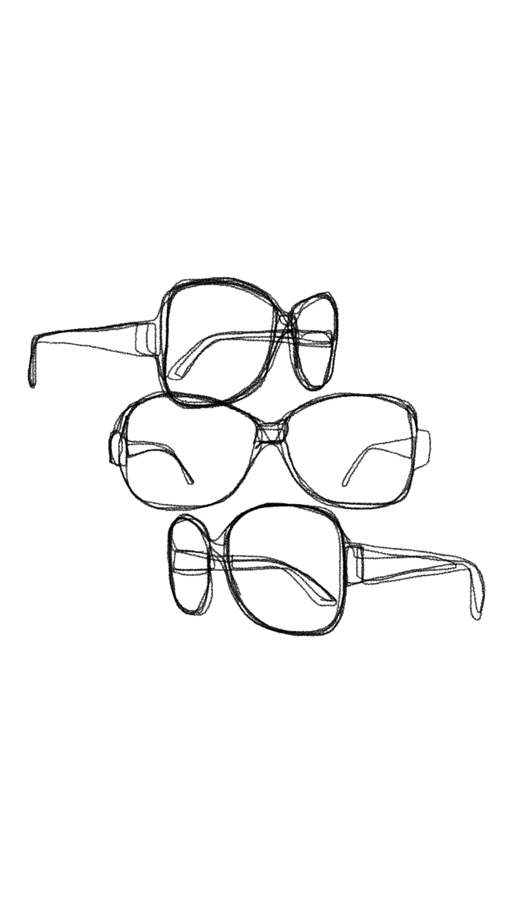
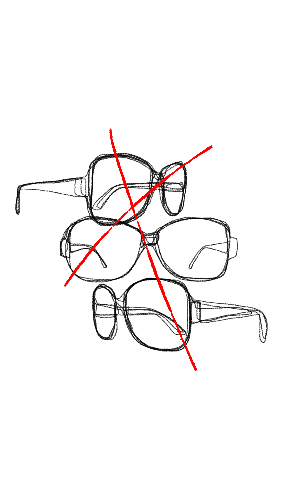

Out of the 14 people in our class, four are wearing glasses, each with a distinct style. Evelynn wears glasses with a thick black frame, while Qizhi’s are similar in color but thinner. Nandu also has black-ish colored frames, and Srinindi’s glasses are a reddish-brown shade with a small motif on the side, giving them a more decorative look.

The rest of us aren’t wearing glasses, but we do have other similarities in what we’re wearing. Chloe, Naomi, Sooyeon, and Gloria are all dressed in grey, while Abigial,Coral, Ellia, and Kiah are wearing black.Rachel stands out from the rest with a unique choice of color, wearing pale yellow.